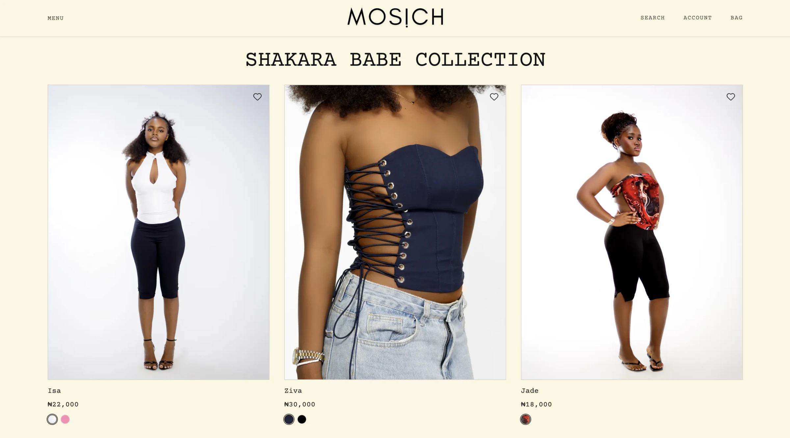

01 / Production Commerce
MOSICH
Production E-commerce Platform
A modern e-commerce platform for a women’s fashion brand, engineered around product discovery, secure checkout, customer accounts, order management and operational workflows.
- Next.js
- TypeScript
- PostgreSQL
- Neon
- Clerk
- Paystack
- Vercel